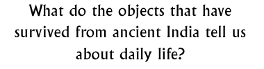

Discussion 9  |
|
Objectives: To explore what can be learned about lifestyles, customs and practices in ancient India through looking at objects.
Materials: Photographs of objects, secondary sources.
Class set-up: Whole group discussion or small groups brainstorming then sharing ideas.
Vocabulary: antique, relic
Discussion: Ask pupils to think about what kinds of objects would or could survive for
thousands of years based on materials, quality of construction and climate. Make a list of the pupils' comments on
the board, or on a large sheet of paper.
Ask pupils to think about what kinds of objects would not survive, even in a hot, dry climate like northern India. Make a new column on your board or sheet of paper and make a list of what kinds of objects would not survive. Explain that the quality of construction is a big factor in terms of what survives and what does not survive. Ask pupils to think about who might have owned objects made from sturdier and finer quality materials. How does this affect our view of what life in ancient India was like for all people?What can't we learn about life in ancient India from surviving objects? Which of the pupils' possessions might survive a thousand years? Why might these ones in particular survive? What definitely wouldn't survive? Why are antiques and ancient relics so valuable and important? Ask pupils to think about the value of everyday objects and imagine how different classes of people in ancient India would have demonstrated their place in society by their possession and display of valuable artefacts. Background information:
Sir Alexander Cunningham and Sir Mortimer WheelerTrade Cities of the Indus Crafts Seals How Indus towns developed
© The British Museum |